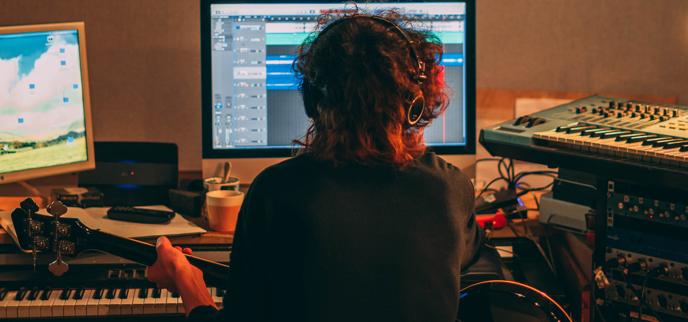

编曲，不只是堆叠声音，而是创造一个完整的世界。
AcretySate
每一首音乐作品，都始于一个简单的灵感。也许是一段旋律，也许是一组和弦，甚至只是脑海中一闪而过的节奏。但真正让这些想法拥有生命力的，并不是旋律本身，而是编曲。它决定了作品的空间感、情绪走向、节奏起伏，以及听众在每一个瞬间所感受到的氛围。
无论是流行音乐、电子音乐、影视配乐还是独立音乐，编曲始终是连接创意与成品的重要桥梁。它不仅需要扎实的乐理基础和制作技巧，更要求创作者具备对声音、节奏和情绪的敏锐判断。一首优秀的作品，很少依赖复杂的元素堆砌，而是通过合理的编排、恰当的留白以及不断变化的动态，让每一种声音都发挥应有的作用，并最终构建出一个完整且具有感染力的听觉世界。
编曲的核心，是讲述故事
很多初学者认为编曲就是不断添加乐器：鼓、贝斯、钢琴、弦乐、合成器……轨道越多，作品就越丰富。但事实上，优秀的编曲更像电影导演安排每一个镜头，而不是把所有画面同时放在屏幕上。
一首完整的作品通常都会经历不同的情绪变化。例如，Intro 可以利用 Pad、环境音或简单的钢琴建立空间感，让听众逐渐进入作品；Verse 保持相对克制，为人声或主旋律留出足够的空间；Pre-Chorus 通过鼓组变化、自动化和谐波增加张力；Drop 或 Chorus 则释放此前积累的能量，成为整首作品最具有冲击力的部分。
除了结构，乐器之间的分工同样重要。鼓负责推动节奏，Bass 提供低频支撑，和弦决定整体色彩，Lead 承担旋律焦点，而各种 FX、Riser、Impact 和环境采样则负责连接不同段落，让作品听起来更加自然流畅。真正优秀的编曲，并不是让所有元素同时出现，而是让每一种声音都出现在最合适的位置。
层次、动态与细节决定作品品质
很多职业制作人与新手之间最大的区别，并不是会不会写旋律，而是在于他们更加重视作品的层次和动态。音乐如果从头到尾保持同样的能量，很容易让听众产生疲劳；而通过不断调整编曲密度，则能够让作品始终保持吸引力。
层次感来源于多个方面。例如，不同频段之间需要保持清晰的分工，高频负责空气感，中频承载主体内容，低频提供力量感；不同音色之间也需要形成对比，例如明亮的 Pluck 可以搭配柔和的 Pad，宽广的 Super Saw 可以配合干净的 Piano，让整体更加立体。
动态则体现在元素的进入与退出。很多时候，减少一个乐器比增加一个乐器更有效。一个简单的鼓 Fill、一次 Filter 自动化、一个短暂的静音、一段 Reverb Tail，甚至只是关闭一层 Hi-Hat，都能够让后面的段落显得更加有力量。这些看似不起眼的细节，往往决定了一首作品是否具有专业水准。
随着 DAW、虚拟乐器和各种插件的发展，现代编曲拥有几乎无限的可能性。从真实的管弦乐到复杂的电子合成，从细腻的环境氛围到极具冲击力的 Bass Design，每一种声音都可以成为表达情绪的一部分。但无论技术如何发展，编曲最终服务的始终只有一个目标——让音乐更准确地表达创作者想传递的情感。当所有声音共同为同一个故事服务时，一首作品才真正拥有属于自己的生命力。